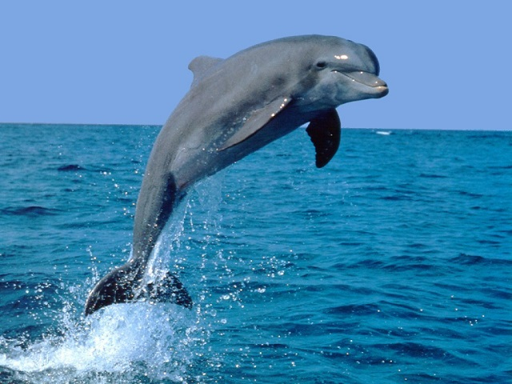

narval
narval orca
orca delfin de rio
delfin de rio casa
casa ballena azul
ballena azul
Megaptera novaeangliae, también llamada yubarta, gubarte[cita requerida] o ballena jorobada,nota 1 es una especie de cetáceo misticeto de la familia Balaenopteridae (rorcuales). Es uno de los rorcuales más grandes, los adultos tienen una longitud de 12 a 16 m y un peso aproximado de 36.000 kg. La especie posee una forma corporal distintiva, con aletas pectorales largas y cabeza nudosa. Es un animal acrobático que con frecuencia se impulsa sobre la superficie para luego golpear el agua. Los machos emiten un canto complejo, el cual dura de diez a veinte minutos y se repite por horas cada vez. El propósito del canto no es claro. Sin embargo, parece desempeñar una función en el apareamiento.
Se distribuye por todos los océanos y mares del mundo; normalmente migran hasta 25 000 km cada año. Las yubartas se alimentan solamente durante el verano en las regiones polares y migran a aguas tropicales y subtropicales para reproducirse y parir las crías durante el invierno polar. Mientras trascurre el invierno ayunan y subsisten gracias a su reserva de grasa. La especie se alimenta principalmente de kril y peces pequeños; posee un amplio repertorio de métodos para alimentarse, incluyendo la notable técnica de la red de burbujas.
Al igual que los otros cetáceos grandes, la ballena jorobada fue objeto de caza. A causa de la captura excesiva, su población se redujo en un 90% antes de la moratoria implementada en 1966. Desde entonces la población se ha recobrado parcialmente; sin embargo, los enredos en elementos de pesca, las colisiones con buques y la contaminación acústica continúan siendo una fuente de preocupación. Se calcula una población global de por lo menos 80 000 ejemplares. Actualmente es uno de los objetivos para el avistamiento de cetáceos, principalmente en las costas de Costa Rica donde se pueden observar 8 meses al año (se dice comúnmente que la "estación de ballenas jorobadas" en Costa Rica es más larga que en cualquier otra parte del mundo,3) así como en Australia, Nueva Zelanda, Chile, Ecuador, Colombia, Venezuela, México, Canadá, Estados Unidos, República Dominicana, Perú y Puerto Rico.
| narval |
orca |
delfin |
| delfin de rio |
casa |
ballena azul |